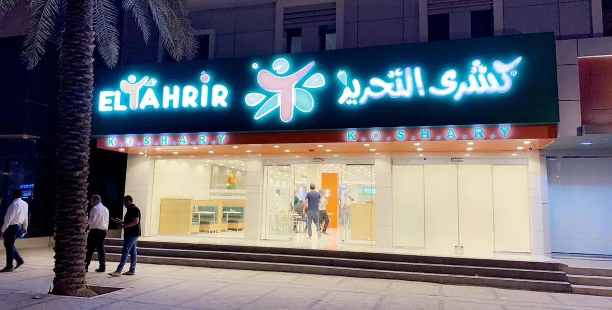
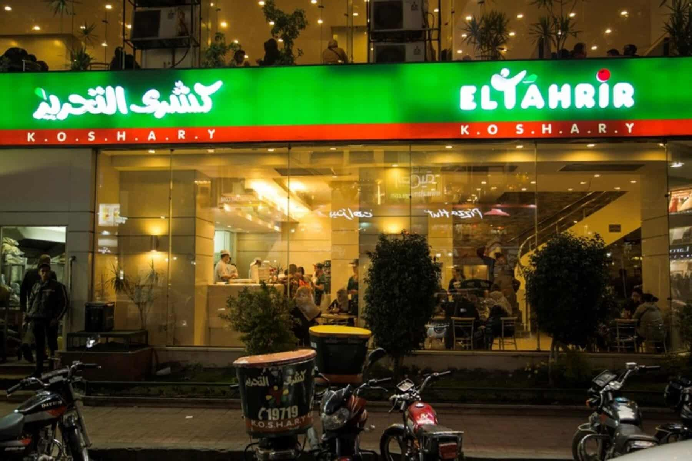
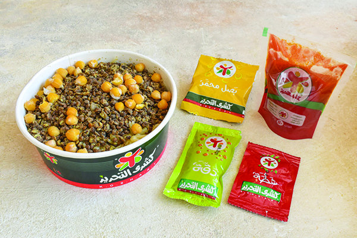
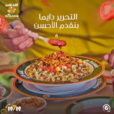

من نحن
كشري التحرير، الطعم الأصيل منذ البداية
منذ اللحظة الأولى التي بدأنا فيها، كان هدفنا واضحًا: تقديم أجود أطباق الكشري المصري بوصفة أصيلة وجودة لا تُضاهى. في كشري التحرير، نحن لا نقدم مجرد وجبة، بل نقدم تجربة طعام متكاملة تحمل معها نكهة التراث المصري العريق
رحلة بدأها الشغف بالطعام المصري
بدأت رحلتنا من قلب ميدان التحرير، حيث اجتمع حبنا للطعام المصري الأصيل مع رغبتنا في تقديم وجبة متكاملة بمذاق لا يُنسى. على مدار السنوات، أصبح كشري التحرير وجهة محبي الكشري من جميع أنحاء مصر، وتوسعت فروعنا لنكون أقرب إليكم دائمًا.
نحن أكثر من مجرد مطعم، نحن مجتمع من عشاق الكشري، نحتفل سوياً بالطعام الجيد والأجواء الرائعة. سواء كنت تزورنا في الفروع أو تطلب أونلاين، نعدك بتجربة ستجعلك تعود مرة بعد مرة.



